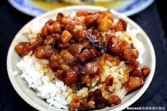

滷肉飯
肥而不膩的滷肉，鮮甜濃郁的醬汁，配上香味四溢的米飯，這才是台灣最具獨特性的古早味滷肉飯。
這一碗家常料理式的美食，其實做起來很簡單，但要做得味道濃郁好吃，讓人欲罷不能，就真的要費一番功夫了。
南部和北部的滷肉飯，有什麼不同？
滷肉飯在台灣是極具特色的全民小吃，但在南北部卻有意義上的不同。
在北臺灣，滷肉飯是淋上含有煮熟碎豬肉（豬絞肉）及醬油滷汁的白飯的料理，有時醬汁裡會有香菇丁等等的食材在裡面，看起來有點像南臺灣肉燥飯。
而「滷肉飯」在臺灣南部，是指有著滷汁，以及塊狀肉的筍乾滷肉飯與彰化的大塊炕肉飯相似。

江振誠
薑母鴨
三杯雞
心得